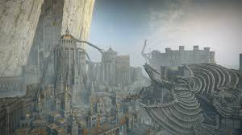
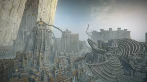

Explora la estética del juego
El mundo de Elden Ring es visualmente impresionante, con paisajes vastos y oscuros, arquitectura gótica y criaturas únicas. Aquí una muestra visual:
Imágenes del juego (debes colocar tus imágenes en la carpeta imagenes con estos nombres):


Arte y atmósfera
La estética del juego combina fantasía oscura con un mundo natural que se siente vivo, misterioso y peligroso. Desde campos iluminados por árboles dorados hasta criptas sumergidas en neblina, el arte visual es clave para la inmersión.
 
